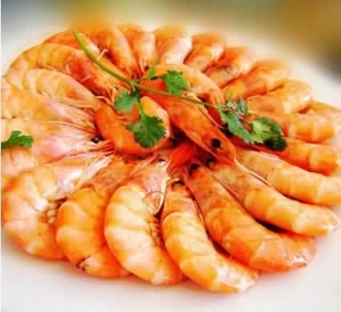
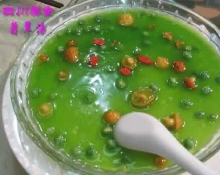

概述怀孕期间的饮食禁忌
许多准妈妈都很想知道，怀孕期间究竟要远离哪些食物呢？什么样的食物会对腹中的宝宝造成健康的隐患？1、过度油腻与刺激性食物：太油腻的食物不容易消化，会加重肠胃不适，刺激性的食物和调味料，也会刺激胃黏膜，加重胃部的灼热感。
2、生冷食物或未妥善保存的食品：菜市场或超市常有熟食贩卖，准妈妈购买这些熟食的时候，要注意选择有卫生保证的商家。类似寿司等生冷食物，要慎重食用。如果吃了已遭细菌污染、不新鲜的食物，发生食物中毒则会危及母亲及胎儿的健康。
3、发霉的食物：要避免食用那些外观看来可能已经发霉的蔬菜、水果，有些准妈妈会将发霉部分去掉后再食用，但事实上霉菌所产生的有害物质可以渗入到更深、且不受到烹调加热所破坏。
4、过度加工的食物：加工食品往往添加了大量的盐，摄取过多的盐会加重高血压及水肿等症状。此外，在选购加工食品之前，也应留意食品保质期、添加物，注意食品是否过期或含过多添加剂，对胎儿健康造成危害。
5、含有酒精的饮料：酒精会通过胎盘进入胎儿血流，造成胎儿生长迟滞、智力不足，也可能会有心脏、脑部等的畸形，为了下一代健康着想，准妈妈应拒绝酒精。
6、茶：茶叶的单宁酸会与铁结合，降低铁的正常吸收率，易造成缺铁性贫血，所以准妈妈还是少喝为好。
7、含咖啡因的饮料：咖啡因会通过胎盘影响胎儿心跳及呼吸，同时容易刺激胃酸分泌、加重肠胃不舒适症状，所以准妈妈最好避免此类饮品，以牛奶、新鲜果汁来取代。
本周推荐尝试食谱1：
清蒸基围虾
推荐理由：虾含有丰富的优质蛋白质、多种维生素及矿物质，营养丰富，能补肾健胃，有利胎儿发育。
食谱原料：
基围虾500克、葱末、姜末、蒜末、盐、料酒、酱油、香油、香菜段各适量。
制作方法：
1、基围虾剥出虾仁，去除沙线，洗净；
2、虾仁用料酒、盐、葱末、姜末拌匀，腌20分钟入味；
3、蒜末加酱油、香油制成调味汁备用；
4、将基围虾仁放入大盘内，上蒸笼蒸15分钟，上桌前撒上香菜段，淋上调味汁即可。
本周推荐尝试食谱2：
香甜翡翠汤
推荐理由：菠菜和胡萝卜富含维生素A与铁，香菇则能健脾胃，益气补虚。
食谱原料：
香菇、鸡肉，豆腐、西蓝花各20克。鸡蛋液适量，高汤，盐各少许。
制作方法：
1、香菇泡发，去蒂，洗净，切成细丝；鸡肉洗净，切粒；豆腐洗净，用沸水焯过后，压成泥；西蓝花洗净，用沸水焯烫熟后切碎；
2、锅内加高汤煮沸，下入香菇丝、鸡肉粒，再次煮沸后，下入豆腐泥，西蓝花碎和蛋液，焖煮3分钟左右，再加少许盐调味即可。